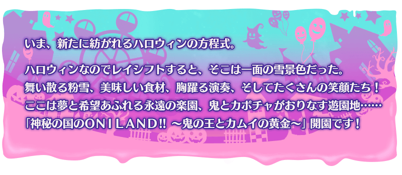

◆活動舉辦期間◆
2018年10月24日(三) 17:00～11月7日(三) 11:59
◆活動概要◆
舉辦期間限定活動「神秘之國ＯＮＩＬＡＮＤ!! ～鬼王與卡姆伊的黃金～(神秘の国のＯＮＩＬＡＮＤ!! ～鬼の王とカムイの黄金～)」！
歡迎來到安心又安全、愛與和平的娛樂殿堂！
本Land來者不拒，歡迎所有的客人！
本活動中進行主線關卡的話，活動限定「★4(SR)Servant」會以期間限定加入。
再推進主線關卡，讓活動限定「★4(SR)Servant」正式加入吧！！
本活動中享受故事的主線關卡日將逐日開放，在10月30日(二) AM7:30，會開放以活動參加中的Master全員挑戰強敵，特殊形式的關卡！
※關於真名尚未判明的Servant，透過主線記錄的進行會讓Servant的名稱變化。
◆活動參加條件◆
滿足以下條件的Master才能參加
・通過第2部 第2章「Lostbelt No.2 無間冰焰世紀 諸神黃昏 不滅之火的好漢」
※不需要通過亞種特異點(從Ⅰ到Ⅳ)。
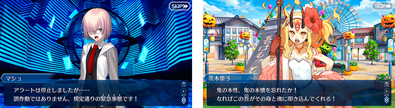

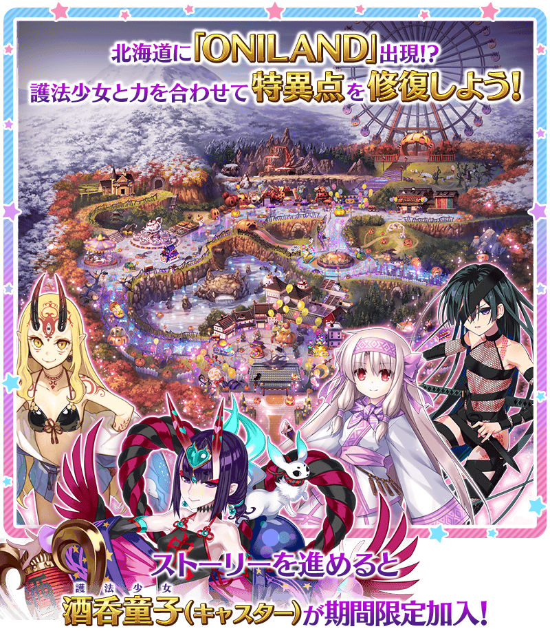
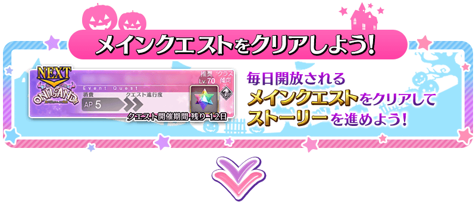
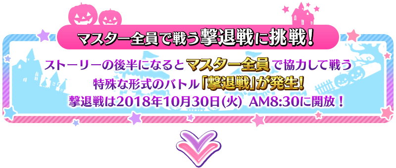
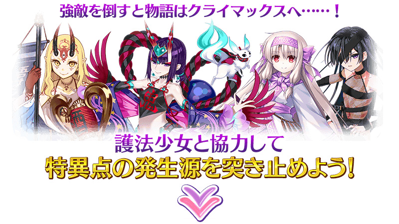

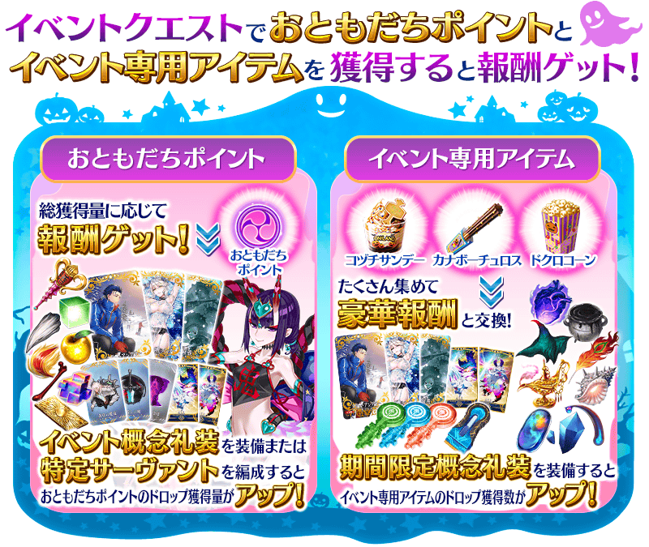
享受故事的主線關卡將逐日開放。
通過主線關卡第2話後，會開放可收集活動道具的自由關卡。
之後的自由關卡，會在通過主線關卡後的地點開放。
※10/23(二) 18:10修正
【主線關卡的舉辦期間】
| 關卡 | 舉辦期間 |
|---|---|
初次記念一口氣開放二話！
主線關卡 第1話～第2話 |
10月24日(三) 17:00～ 11月7日(三) 11:59 |
| 主線關卡 第3話 | 10月25日(四) AM7:30～ 11月7日(三) 11:59 |
| 主線關卡 第4話 | 10月26日(五) AM7:30～ 11月7日(三) 11:59 |
| 主線關卡 第5話 | 10月27日(六) AM7:30～ 11月7日(三) 11:59 |
| 主線關卡 第6話 | 10月28日(日) AM7:30～ 11月7日(三) 11:59 |
| 主線關卡 第7話 | 10月29日(一) AM7:30～ 11月7日(三) 11:59 |
最終回特別！
主線關卡 第8話～第11話 Epilogue |
10月30日(二) AM7:30～ 11月7日(三) 11:59 |
【10月30日(二) AM7:30追記】
在第8話(前篇)之後開放的炎舞撃退戰中，會發生靠活動參加中的Master全員撃退強大敵人的特殊形式戰鬥。
在炎舞撃退戰出現的敵人會有「剩餘戰鬥數」，關卡中每使HP變為0的話可減少1次。
「剩餘戰鬥數」是所有Master共有，靠Master全員多次通過炎舞撃退戰，使「剩餘戰鬥數」變為0次才能將敵人撃退。
「剩餘戰鬥數」變為0次後會發生終結戰，可更推進故事。
多次挑戰炎舞撃退戰，目標將敵人撃退吧！
※在炎舞撃退戰會有3種難易度，通過時的「剩餘戰鬥數」減少數，無論何種難易度都是1次。
※戰鬥中就算全滅，也可使用令咒3劃或聖晶石1個續關。
※「剩餘戰鬥數」變為0次後結束炎舞撃退戰，在那之後無法參戰炎舞撃退戰。
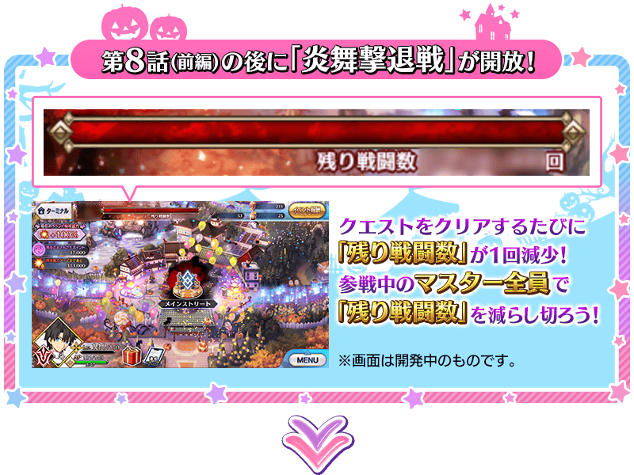

※在終結戰之後追加的第8話(後篇)關卡開放，會有需要從炎舞撃退戦結束後30分鐘左右時間的情況。
【10月30日(二) AM7:30追記】
以通過期間限定活動「神秘之國ＯＮＩＬＡＮＤ!! ～鬼王與卡姆伊的黃金～」Epilogue的Master做為對象，開放高難易度的「挑戰關卡。
「挑戰關卡」就算通過後也不會消失，能無數次挑戰，可以變更Servant和概念禮裝的組合後再次挑戰。
※「挑戰關卡」為酒吞童子(Caster)本活動中限定的職階技能效果「自身的NP以50％累積狀態開始戰鬥」的對象外。
※關卡通過報酬、戰利品、Master經驗值、魔術禮裝經驗值、絆點數只可在初次通過時獲得。
◆挑戰關卡開放時間◆
2018年10月30日(二) AM7:30以後(炎舞撃退戰結束後)
◆挑戰關卡參加條件◆
滿足以下條件的才能參加
・通過「神秘之國ＯＮＩＬＡＮＤ!! ～鬼王與卡姆伊的黃金～」的Epilogue
◆挑戰關卡初次通過報酬◆
傳承結晶 1個
好朋友點數的総獲得量到達一定量後，可獲得達成報酬。
達成報酬可在點擊管理室(ターミナル)畫面右上「活動報酬」所顯示的「好朋友點數報酬」畫面確認。
※好朋友點數的總獲得量是計算在活動關卡掉落所獲得的好朋友點數。
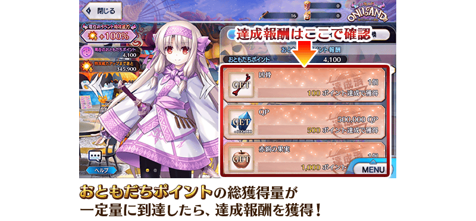
本活動中，裝備可靠活動道具交換和好朋友點數達成報酬等入手的活動限定概念禮裝「スリー・アングラー」「ロイヤル・アイシング」「氷結闘熊」的話，會提升透過各概念禮裝對應種類指令卡的攻擊威力與好朋友點數的掉落獲得量。
另外，此活動限定概念禮裝的「攻擊威力提升」的效果，好朋友點數的総獲得量超過一定値超的話會強化威力。
目前的「攻擊威力提升」的效果與下個威力提升前的必要點數，在推進故事的話會顯示在地圖畫面與活動報酬畫面的左側。
由於與在主線關卡和撃退戰的強敵戰鬥有利，不斷收集好朋友點數，提高威力吧！
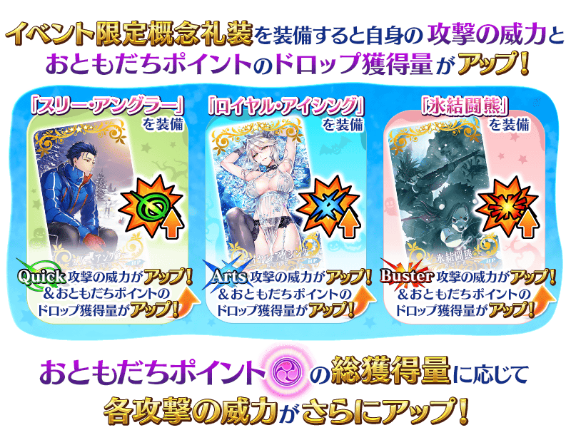
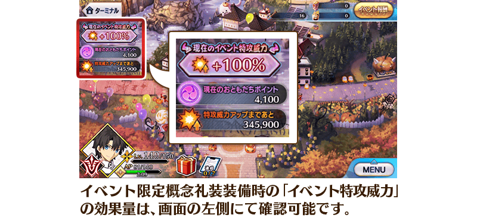

◆超值攻略方法・其1◆
將活動加成對象Servant編入隊伍吧！
在本活動做為活動加成篩選器對象的下述Servant，會提升好朋友點數的掉落獲得量。
※各Servant增加量有所差異。
※關於真名尚未判明的Servant，透過主線記錄的進行會讓Servant的名稱變化。
※自10月19日(五) 17:00，在Servant選擇畫面和Servant強化畫面等中，追加「下次活動對象」篩選器。
由於是只顯示在活動活躍Servant的便利功能，敬請活用。
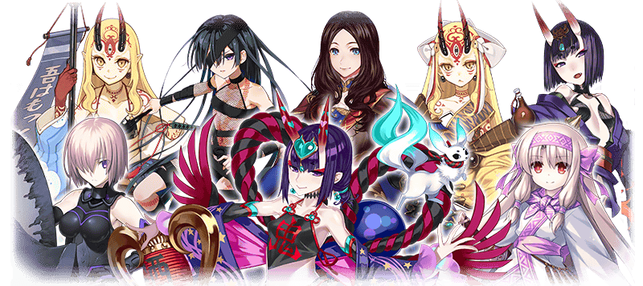
【對象Servant】
| 掉落 獲得量 |
職階 | 稀有度 | Servant名 |
|---|---|---|---|
| +30% | Caster | ★★★★ | 酒吞童子 |
| Alterego | ★★★★★ | 志度內 | |
| +20% | Lancer | ★★★★ | 茨木童子 |
| Caster | ★★★★★ | 李奧納多・達文西 | |
| Assassin | ★★★★★ | 酒吞童子 | |
| ★★★★ | Assassin・樂園 | ||
| Berserker | ★★★★ | 茨木童子 | |
| Shielder | ★★★ | 瑪琇・基利艾拉特 | |
| +10% | Saber | ★★★★ | 弗蘭肯斯坦 |
| Archer | ★★★★ | 克洛伊・馮・愛因茲貝倫 | |
| ★★★ | 尤瑞艾莉 | ||
| ★★★ | 子吉爾 | ||
| ★★★ | 比利小子 | ||
| Lancer | ★★★★ | 貞德・Alter・聖誕・Lily | |
| ★★★★ | 美杜莎 | ||
| Rider | ★★★ | 亞歷山大 | |
| Caster | ★★★★★ | 伊莉雅絲菲爾・馮・愛因茲貝倫 | |
| ★★★★ | 童謠 | ||
| ★★★★ | 美狄亞〔Lily〕 | ||
| ★★ | 漢斯・克里斯蒂安・安徒生 | ||
| Assassin | ★★★★★ | 開膛手傑克 | |
| ★★★★ | 絲西娜 | ||
| ★★★★ | 不夜城的Assassin | ||
| Berserker | ★★★★ | 茶茶 | |
| ★★★★ | 弗蘭肯斯坦 | ||
| ★ | 靠漫畫了解Berserker | ||
| Foreigner | ★★★★★ | 阿比蓋爾・威廉斯 |
※就算成為對象Servant也會有在本活動的主線劇本未登場的情況。
◆超值攻略方法・其2◆
期間限定活動「神秘之國ＯＮＩＬＡＮＤ!! ～鬼王與卡姆伊的黃金～」的一部份關卡以限定對「★4(SR)酒吞童子(Caster)」追加特殊效果！
「★4(SR)酒吞童子(Caster)」在本活動的主線關卡及撃退戰，可以自身的NP50％累積狀態開始戰鬥。
※自由關卡為對象外。
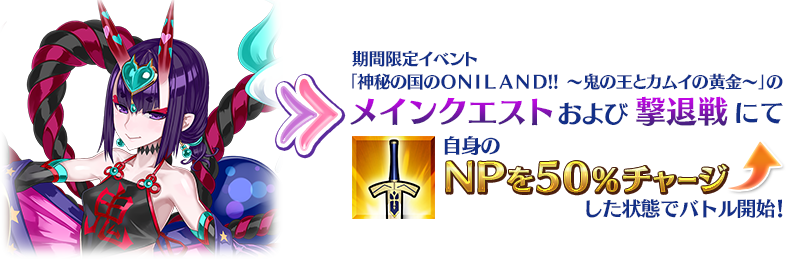
◆超值攻略方法・其3◆
裝備期間限定概念禮裝會提升活動限定道具的掉落獲得數！
裝備在聖晶石召喚Pick Up的期間限定概念禮裝「Welcome to ONILAND!!」「ただ紅く」「足柄ブラザーズ」的話，會提升活動専用道具「小槌聖代」「狼牙吉拿棒」「髑髏爆米花」各自的掉落獲得數。
※請注意各關卡的道具掉落率並非100％。
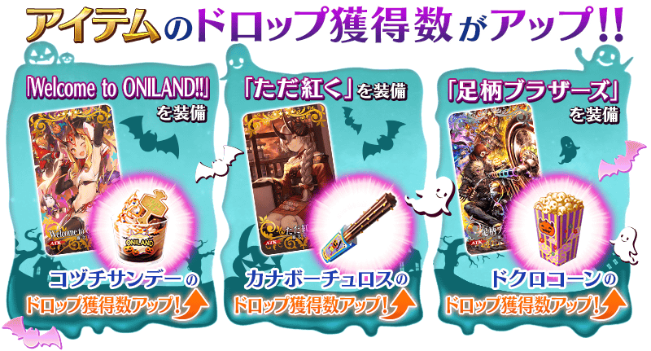
活動専用道具可自點擊管理室(ターミナル)畫面右上「活動報酬」的「活動道具交換」畫面，交換以下的道具。
※英靈結晶・流星之芙芙ALL★4(HP)、英靈結晶・日輪之芙芙ALL★4(ATK)的交換在通過期間限定活動「神秘之國ＯＮＩＬＡＮＤ!! ～鬼王與卡姆伊的黃金～」主線關卡後開放。
◆交換期間◆
2018年10月24日(三) 17:00～11月14日(三) 11:59
※交換期間結束後「小槌聖代」「狼牙吉拿棒」「髑髏爆米花」會消失。
◆能用小槌聖代交換的道具◆
|
【活動限定Servant】 【活動限定概念禮裝】 【技能強化＆靈基再臨素材】 【靈基再臨素材】 【其他道具】 |
◆能用狼牙吉拿棒交換的道具◆
|
【活動限定Servant】 【活動限定概念禮裝】 【技能強化＆靈基再臨素材】 【靈基再臨素材】 【其他道具】 |
◆能用髑髏爆米花交換的道具◆
 |
【活動限定Servant】 【活動限定概念禮裝】 【技能強化＆靈基再臨素材】 【其他道具】 |

| 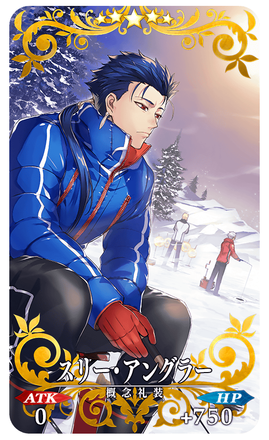 |
★★★★★SSR |

 |
★★★★★SSR |
| 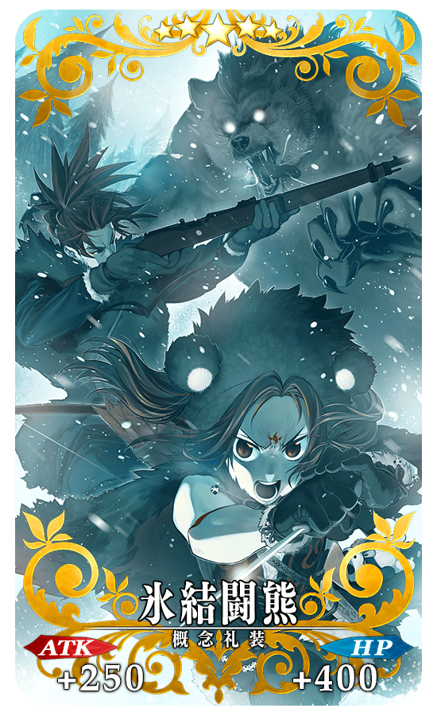 |
★★★★★SSR |
 |
【活動限定】 |
| 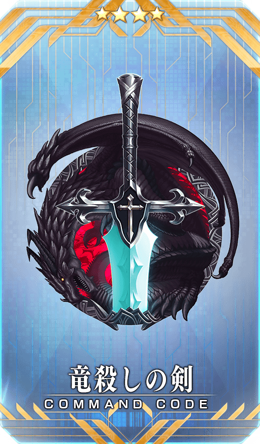 |
★★★★SR |
| 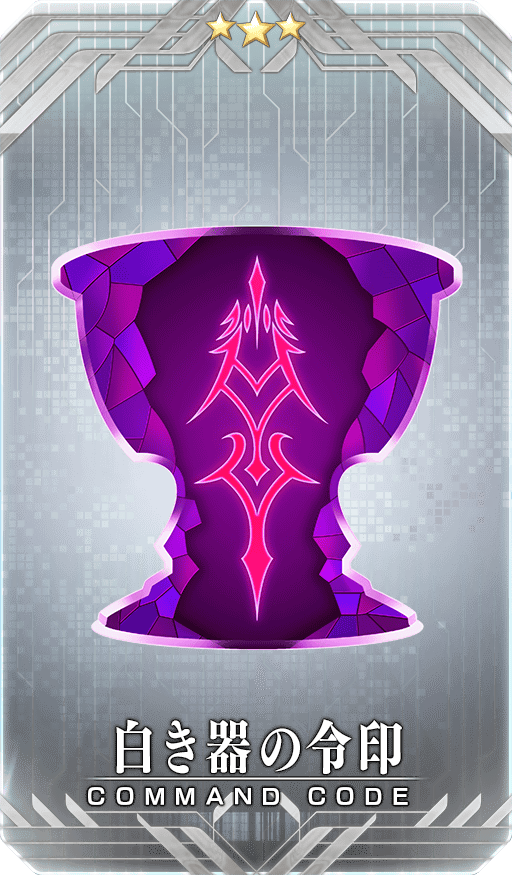 |
★★★R |

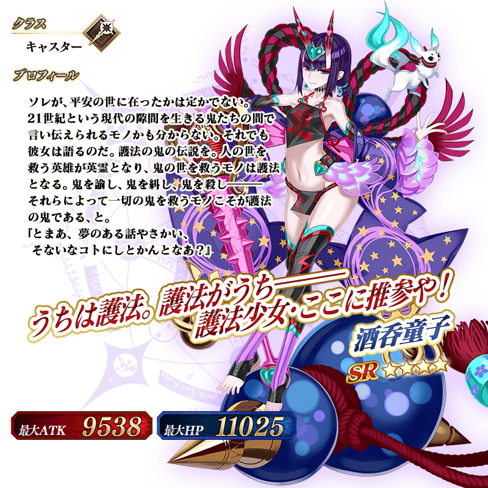
◆靈基再臨◆
使用可靠好朋友點數達成報酬入手的「護法のステッキ」，重複4次靈基再臨的話，卡面會有所變化！

※酒吞童子(Caster)不會隨靈基再臨使戰鬥角色的外觀變化。

介紹酒吞童子(Caster)的寶具演出！
「Fate/Grand Order」官方網站內的公告中，公開了「★4(SR)酒吞童子(Caster)」的寶具演出。敬請確認。
在已刻印的★2(UC)以下的指令紋章，追加新指令紋章可「覆蓋」的功能。
不使用指令紋章分離道具，能刻印新的指令紋章刻印。請注意將會失去先前刻印的指令紋章。
◆追加時間◆
2018年10月24日(三) 17:00～(預定)
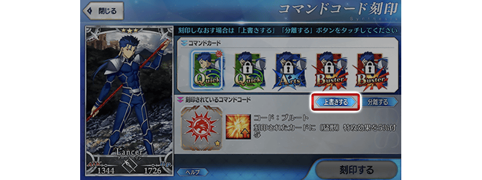
寶具演出速度追加可個別Servant設定的功能。
能從Servant詳細，下述一樣地個別設定。
【無】 ＝ 速度不個別設定，遵從全體的速度設定
【等速固定】＝ 無視全體的速度設定，速度固定在等倍速
【倍速固定】＝ 無視全體的速度設定，速度固定在二倍速
◆追加時間◆
2018年10月24日(三) 17:00～(預定)
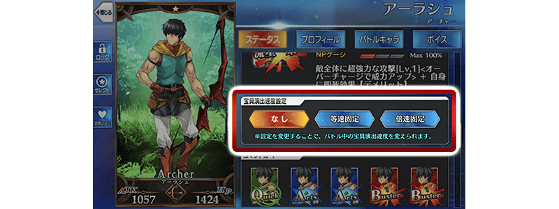

追加可只限持有Servant初次使用寶具時，寶具演出速度以等倍速顯示的功能。
請注意隨著這個，本功能追加以後會進行Servant是否初次使用寶具的記錄。
本功能可從遊戲選項設定為OFF。
◆追加時間◆
2018年10月24日(三) 17:00～(預定)

於戰鬥結束後的「獲得戰利品」畫面，可確認獲得道具持有數的UI改善。
◆追加時間◆
2018年10月24日(三) 17:00～(預定)
・獲得的戰利品畫面
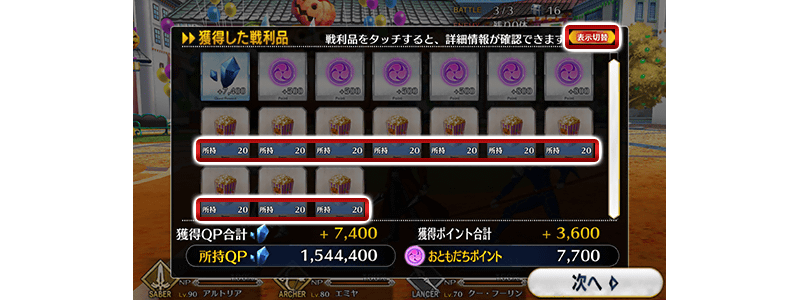
・活動點數報酬一覧畫面
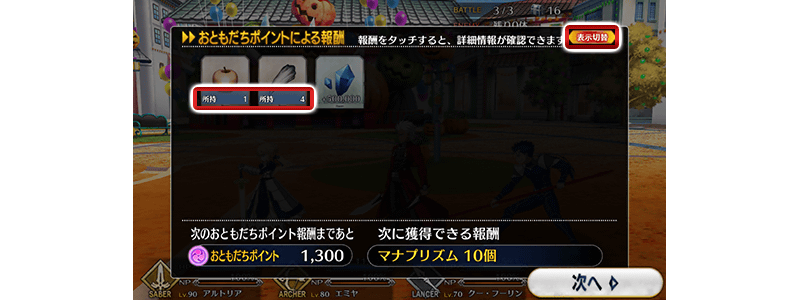

追加可確認上次施行關卡的顯示。
◆追加時間◆
2018年10月24日(三) 17:00～(預定)
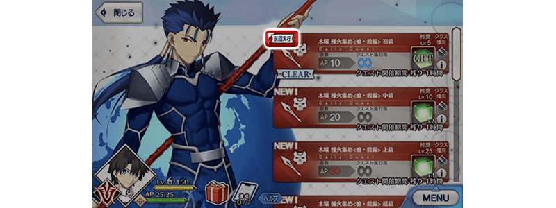
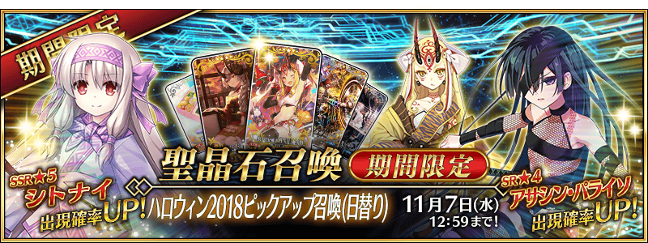
◆「萬聖節2018 Pick Up召喚(每日交替)」期間◆
期間:2018年10月24日(三) 17:00～11月7日(三) 11:59
舉辦期間限定「萬聖節2018 Pick Up召喚(每日交替)」！
※就算未通過第2部 第2章「Lostbelt No.2 無間冰焰世紀 諸神黃昏 不滅之火的好漢」的狀態也能進行「萬聖節2018 Pick Up召喚(每日交替)」。
期間限定活動「神秘之國ＯＮＩＬＡＮＤ!! ～鬼王與卡姆伊的黃金～」中活躍的「★5(SSR)志度內」新登場！
本次包含上述含Pick Up 3位Servant！
「★4(SR)Assassin・樂園」「★4(SR)茨木童子(Berserker)」以每日交替Pick Up，「★5(SSR)志度內」常駐Pick Up。
詳情請在聖晶石召喚畫面左下的召喚詳細確認。
做為期間限定概念禮裝「★5(SSR)Welcome to ONILAND!!」「★4(SR)ただ紅く」「★3(R)足柄ブラザーズ」登場！
裝備上述3種概念禮裝的話，在期間限定活動「神秘之國ＯＮＩＬＡＮＤ!! ～鬼王與卡姆伊的黃金～」中會提升活動専用道具的掉落獲得數。
◆有關Servant的注意◆
※志度內是自10月24日(三) 17:00在Lostbelt No.2通過後追加到故事召喚的Servant。
※Pick Up期間中。志度內就算通過Lostbelt No.2前也能入手。
※志度內、Assassin・樂園、茨木童子(Berserker)在Pick Up期間結束後仍會在故事召喚被抽出。
※關於真名尚未判明的Servant，透過主線關卡的進行度會讓Servant及一部份寶具名稱變化。
◆有關概念禮裝的注意◆
※足柄ブラザーズ在Pick Up期間中，也能在友情點數召喚獲得。
※請注意自友情點數召喚抽出足柄ブラザーズ在自動變還設定登錄★3(R)概念禮裝的情況，會變成自動變還的對象。
Pick Up期間中，Pick Up Servant、期間限定概念禮裝的出現機率提升！
10次召喚中確定1張★4(SR)以上和確定1位★3(R)以上的Servant！
※確定★4(SR)以上包含Servant和概念禮裝。
| 每日交替Pick Up期間 | 每日交替Pick Up內容 |
|---|---|
| 10月24日(三) 17:00～ 10月31日(三) 22:59 |
志度內 Assassin・樂園 茨木童子(Berserker) |
| 10月31日(三) 23:00～ 11月2日(五) 22:59 |
志度內 茨木童子(Berserker) |
| 11月2日(五) 23:00～ 11月4日(日) 22:59 |
志度內 Assassin・樂園 |
| 11月4日(日) 23:00～ 11月7日(三) 11:59 |
志度內 Assassin・樂園 茨木童子(Berserker) |
※請注意會以每日交替變更Pick Up的Servant。

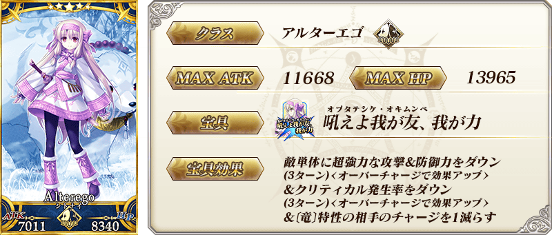
※上述「★5(SSR)志度內」的卡面為靈基再臨第2階段。

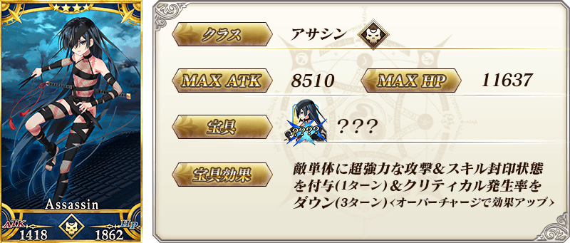


※上述「★4(SR)茨木童子(Berserker)」的卡面為靈基再臨第2階段。

 |
★★★★★SSR |
| 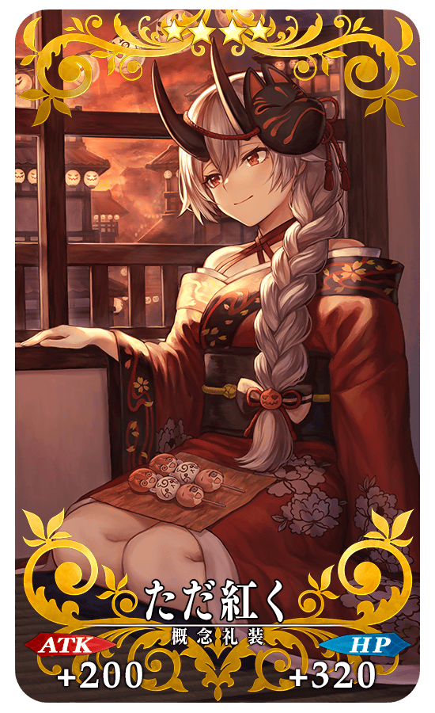 |
★★★★SR |

| 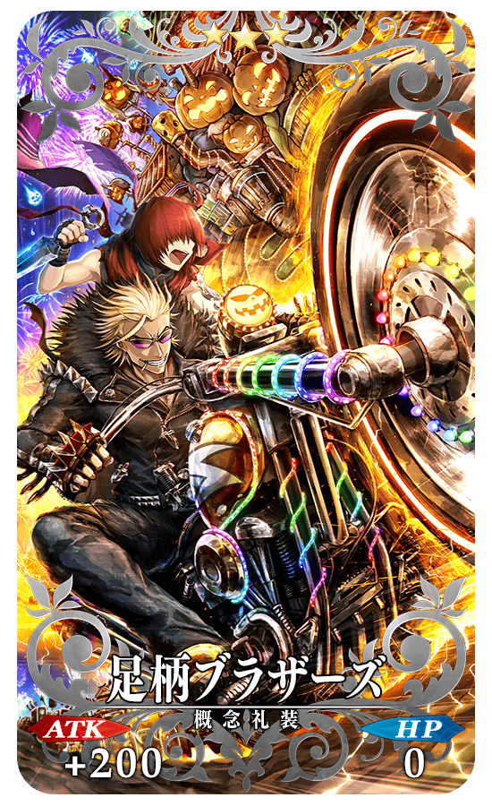 |
★★★R |

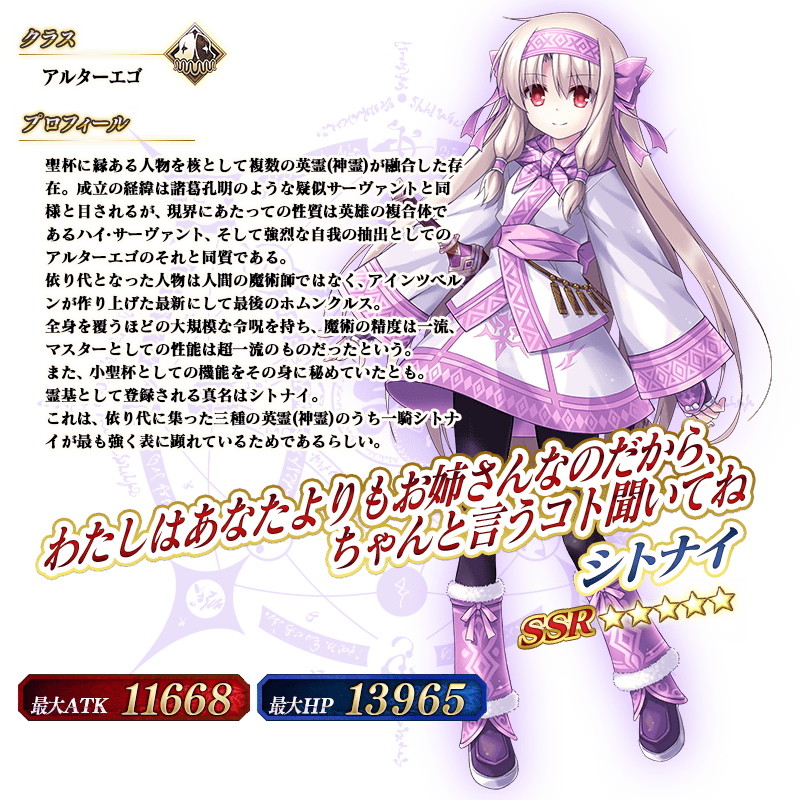
※上述「★5(SSR)志度內」的立繪為靈基再臨第2階段。
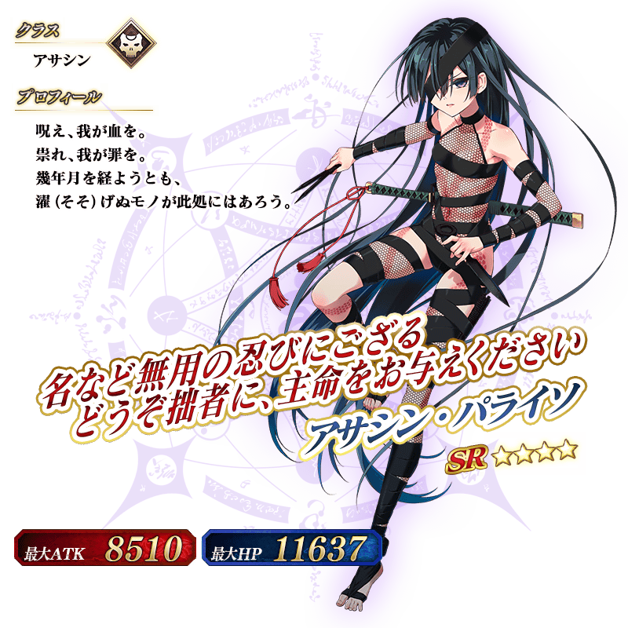
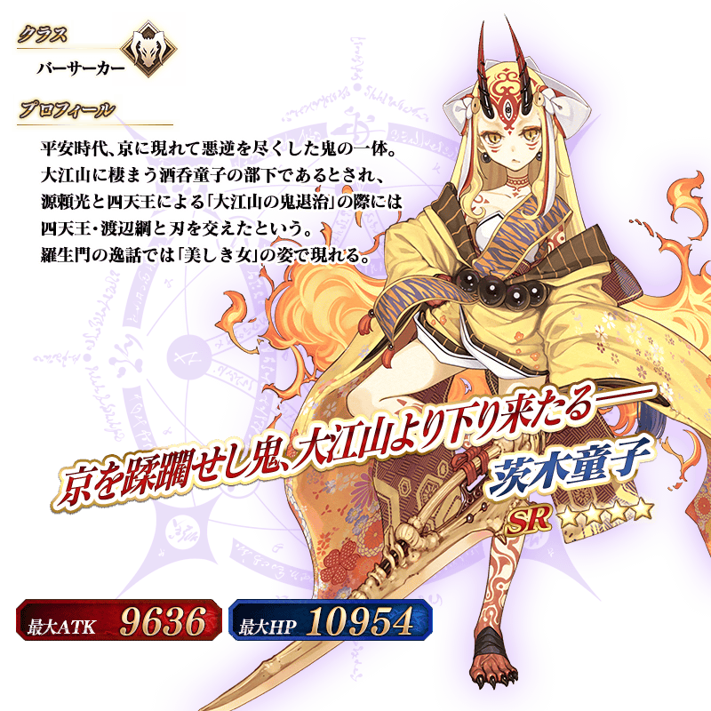
※上述「★4(SR)茨木童子(Berserker)」的立繪為靈基再臨第2階段。
介紹志度內的寶具演出！
在「Fate/Grand Order」官方網站內的公告中，公開了「★5(SSR)志度內」的寶具演出。敬請確認。
介紹Assassin・樂園、茨木童子(Berserker)的寶具演出！
在「Fate/Grand Order」官方網站內的公告中，公開了「★4(SR)Assassin・樂園」「★4(SR)茨木童子(Berserker)」的寶具演出。敬請確認。